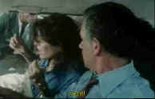

|
Rabid
Dogs/B+,C+ |
|
Lucertola/1974/96m |
As
tight and compact a thriller as you can imagine from legendary
Italian director Mario Bava. Bava's films have long had a cult
following and Rabid Dogs is one that was rescued from
oblivion. Made in 1974, the film was not quite completed when
one of the financial partners was killed in an auto accident.
The film was completed 1994 using Bava's note for the minor
finishing touches.
Bava set things up quickly. A trio of
robbers stops a car and grabs a payroll while a brutal gun
battle ensues. They escape in their car, but a police bullet
penetrates the gas tank and they soon are out of gas. Cornered
in a garage, they take a couple of women hostage and flee from
the police. Realizing they need to switch cars to avoid
detection, they stop a man driving his sick child to the
hospital and the hostage situation intensifies.
Most of the action in Rabid Dogs
takes place in the hi-jacked car and Bava's brilliant editing
provides a dynamic tension and a engulfing sense of panic and
claustrophobia. It's amazing that the film never seems static.
The pace is heart pounding, the criminals disgusting and
survival borders on impossible. Bava controls the mayhem and
madness, and moves unpredictably through the escape route. Don't
miss this rescued gem!
 |
|
Murder and
kidnapping Bava style.©Lucertola
|
The quality of the DVD
is limited by the source material, which was was evidently
dicey and the producers have opted to do what appears to be
extensive digital cleaning in the transfer. This results in a
soft DVD with some overexposed passages. I must admit, as
enthralled as I was by the film, I was grateful that it had been
delivered in reasonable condition. The terrific score by Stelvio
Cipriani is thinly recorded but very exciting. Essays are
provided on the DVD recounting the history of the production and
restoration.
|
The
Feature
Archive has articles ranging from John
Ford to Blonde
Bimbos, The
Heistmasters and Frank
Darabont.

Click on the image above for as original view of Akira
Kurosawa's work.
Check out the Movie
Poster Archive for short bios and images of
Susan Hayward, Kirk Douglas, Katharine Hepburn and many more.
This month's featured star is Clark
Gable.

Imaging Science Foundation promotes proper
standards in home theater viewing. ISF trained technicians offer
monitor calibration services to consumers. The difference in
a properly calibrated monitor can be astounding. Click on
the image to find an ISF member near you.
Home
Theater Reference Reviewing System

When you read a DVD review it's of utmost importance to know
what equipment is being used to evaluate quality. Click on the
projector to find out more.
HOT
LINKS
DVD
Verdict
They
may be judgmental, but that's the point, isn't it. Lots of DVD
reviews plus news and more
The
Home Theater Forum
Looking for
lively and helpful exchanges on home theater, DVD, movies. Visit
this friendly site and get a hardy welcome.
|